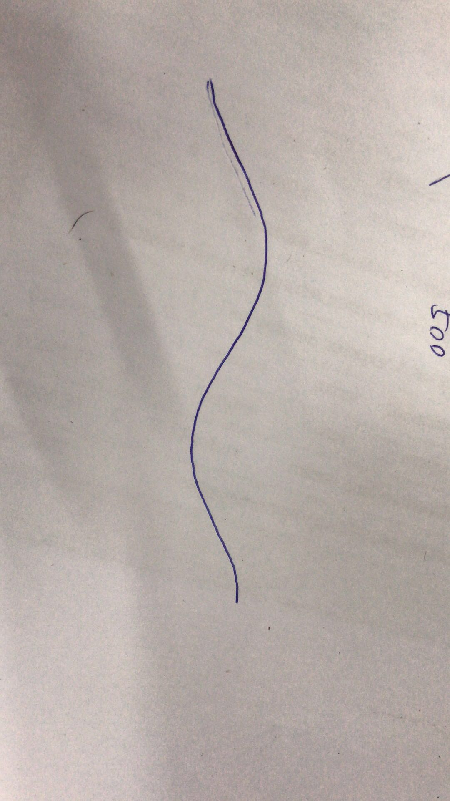
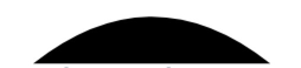
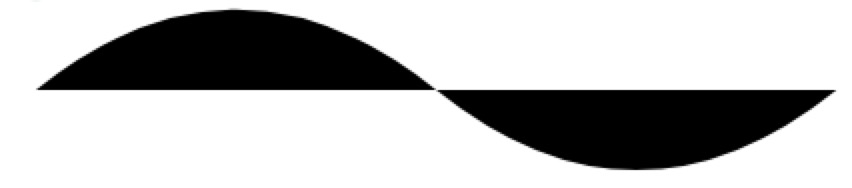

现在的UI设计都流行加条小波浪哟，看起来高大上的。

在波浪界有个著名的公式叫“贝塞尔曲线”，学习一下看看怎么能画一条完美的曲线。
公式
贝塞尔曲线可以根据控制点的数量分为多阶的曲线：
一阶贝塞尔曲线：

二阶：

三阶：

以此类推.
分析
先来一个小拱门
首先确认一下目标，希望画出下面的曲线。同时我们只想要结果，不需要理会过程，所以这里不再对公式推导，如果需要深入了解公式的，可以看看这篇文章

em…竖着看感觉怪怪的..很像那啥。。
呸呸呸。。大家意会即可。。
首先要画其中一个波浪，可以知道的是起点1
A(x_0,y_0)
还有终点1
C(x_d,y_d)
还有我们假设这是一个左右平衡的波浪，那么我们假设波浪 高度为h ,就可以得到中间点1
P_t = ((x_d-x_0)/2,h)
根据公式我们来看一下能不能求出控制点P
其实左右平衡的情况下，我们可以直接把起点、终点和控制点看成是一个等腰三角形，那么假设我们h=20那么波浪的顶点就是1
P_t(x_d-x_0,20)
由于是等腰三角形，那么到达顶点的时候，顶点切线到左右两边的控制轴的距离是相等的，分别设这两个点为D,E。
根据贝塞尔的特性，可以得到:1
AD:AP = EP:CP = DP_t:DE
因为等腰的关系所以他们的比率都是1/2
所以控制点的高度就(k)是1
2
3
4
5AP = \sqrt{(h+k)^2+(AC/2)^2}
DP_t = AC/2/2 = 25
h = 20
同时，根据比例：1
2
3
4
5AD = \sqrt{(25)^2+(20)^2} = 32
AP = 64
k = 20
所以控制点P:1
P (50,40)
效果图：

em..这个图很粗糙..svg生成的..意会就好..
再来一个反拱门
根据上面计算的，当控制点为1
P(150,-40)
的时候就可以得到下面的效果图

好了这里就暂时不涉及svg的东西了，由于svg的坐标轴是已左上角为原点，混在一起说的话就会乱了。